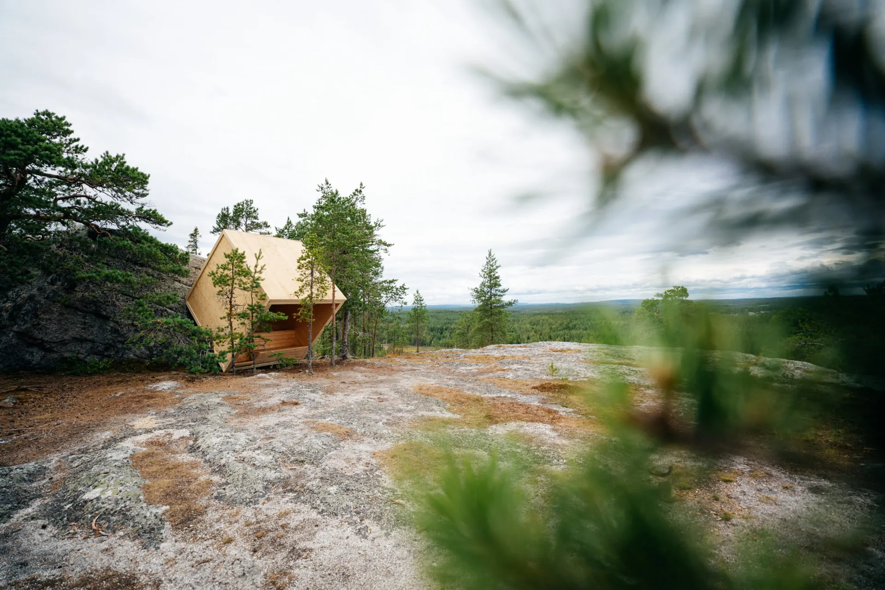
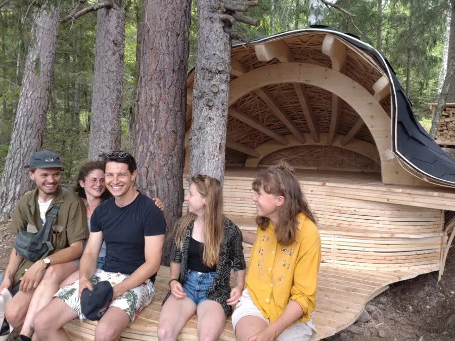

Scandinavian architecture festival
ARCHITECTUREIN THE WILD.
A meeting between architecture and nature.
Built together. Open to everyone.
This is Arknat
Architecture + NatureSMALL STRUCTURES.
BIGGER PERSPECTIVES.
1:1Ideas at full scale
2 weeksFrom concept to construction
What happens when you take architecture out of the studio and into the forest?
Arknat brings students, architects and craftspeople together to build with wood. The result is a collection of remarkable places to pause, take shelter and see the landscape differently.
Discover the Arknat storyOUT THERE.
FOR EVERYONE.
Follow a trail. Find a shelter. Stay a little longer.
Find your next escape.
Explore all six regions.
The Arknat film
LESS TALK.
MORE SAWDUST.
Two weeks in Sörmland. A shared idea, many hands, and something that stays.

Participate!
GET YOUR
HANDS ON
SOMETHING REAL.
For students in architecture, engineering and landscape design. Bring your curiosity. Build something that people can experience.
Next festival4-19 August 2027Applications open1 December 2026
How to take part